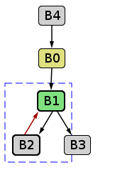
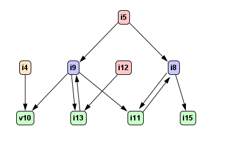
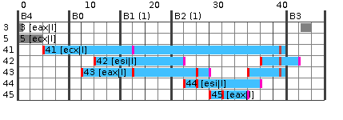

sample code factFor¶
入力ソースコードfactFor
public static int factFor(int n) {
int p = 1;
for (int i = 1; i <= n; i++) {
p = p * i;
}
return p;
}
factFor Bytecode
public static int factFor(int);
Code:
0: iconst_1
1: istore_1
2: iconst_1
3: istore_2
4: iload_2
5: iload_0
6: if_icmpgt 19
9: iload_1
10: iload_2
11: imul
12: istore_1
13: iinc 2, 1
16: goto 4
19: iload_1
20: ireturn
factFor HIR
static jint Fact.factFor(jint)
B4:
i4 = method parameter
v17 = std entry B0
B0:
i5 = 1
v7 = goto B1
B1:
i8 = [i5, i11]
i9 = [i5, i13]
v10 = if i9 > i4 then B3 else B2
B2:
i11 = i8 * i9
i12 = 1
i13 = i9 + i12
v14 = goto B1
B3:
i15 = ireturn i8
factFor HIR CFG
factFor HIR DFG
factFor Optimized HIR
static jint Fact.factFor(jint)
B4:
i4 = method parameter
v17 = std entry B0
B0:
i5 = 1
v7 = goto B1
B1:
i8 = [i5, i11]
i9 = [i5, i13]
v10 = if i9 > i4 then B3 else B2
B2:
i11 = i8 * i9
// deleted i12 = 1
i13 = i9 + i5 // replaced i13 = i9 + i12
v14 = goto B1
B3:
i15 = ireturn i8
factFor translate HIR to LIR
# # # #
label B4
std_entry
move ecx R41
branch AL B0
label B0
move 1 R43
move 1 R42
branch AL B1
label B1
cmp R43 R41
branch GT B3
branch AL B2
label B2
move R42 R44
mul R44 R43 R44
move R43 R45
add R45 1 R45
safepoint bci:16
move R45 R43
move R44 R42
branch AL B1
label B3
move R42 eax
return eax
![digraph factFor {
B4 [shape=box, label="B4\l std_entry\l move ecx R41\l branch AL B0\l"];
B4 -> B0;
B0 [shape=box, label="B0\l move 1 R43\l move 1 R42\l branch AL B1\l"];
B0 -> B1;
B1 [shape=box, label="B1\l cmp R43 R41\l branch GT B3\l branch AL B2"];
B1 -> B3;
B1 -> B2;
B2 [shape=box, label="B2\l move R42 R44\l mul R44 R43 R44\l move R43 R45\l add R45 1 R45\l safepoint bci:16\l move R45 R43\l move R44 R42\l branch AL B1\l"];
B2 -> B1;
B3 [shape=box, label="B3\l move R42 eax\l return eax\l"];
}](../images/graphviz-4bb5a0792b971aab1a2c64a112246fdd93e09280.png)
LenearScanレジスタ割り付け
Before Code Generation
# # # #
label B4
std_entry
// deleted move ecx R41
// deleted branch AL B0
label B0
move 1 eax // replaced move 1 R43
move 1 esi // replaced move 1 R42
branch AL B1
label B2
// deleted move R42 R44
mul esi eax esi // replaced mul R44 R43 R44
// deleted move R43 R45
add eax 1 eax // replaced add R45 1 R45
safepoint bci:16
// deleted move R45 R43
// deleted move R44 R42
// deleted branch AL B1
label B1
cmp eax ecx // replaced cmp R43 R41
// deleted branch GT B3
branch LE B2 // replaced branch AL B2
label B3
move esi eax // replaced move R42 eax
return eax